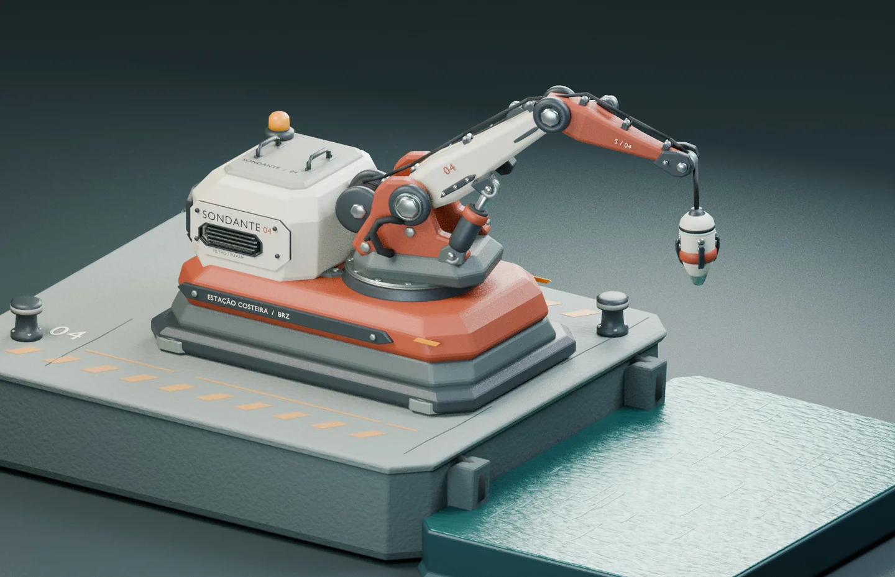
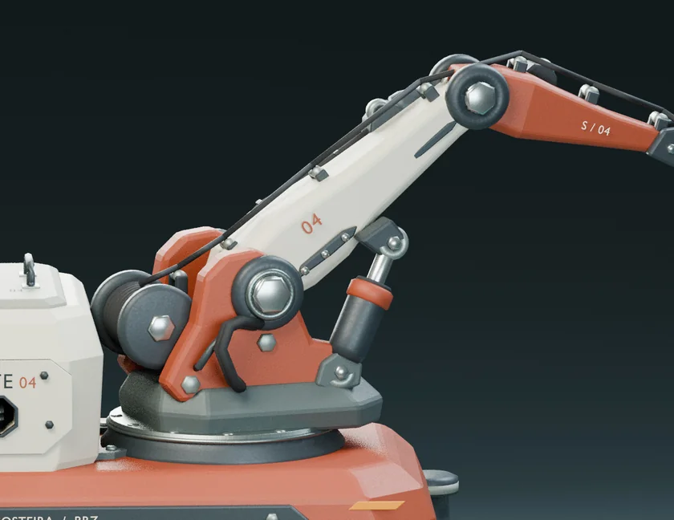
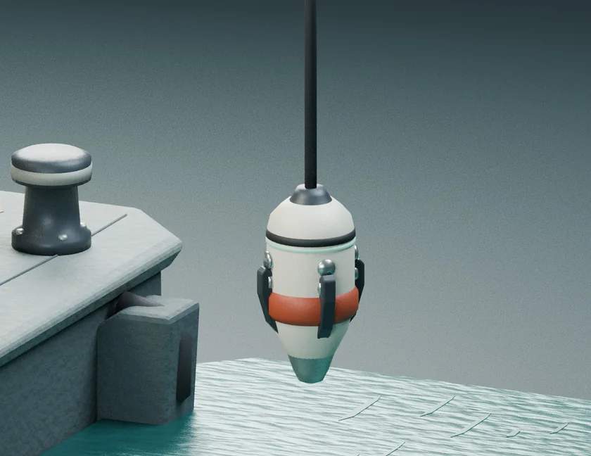
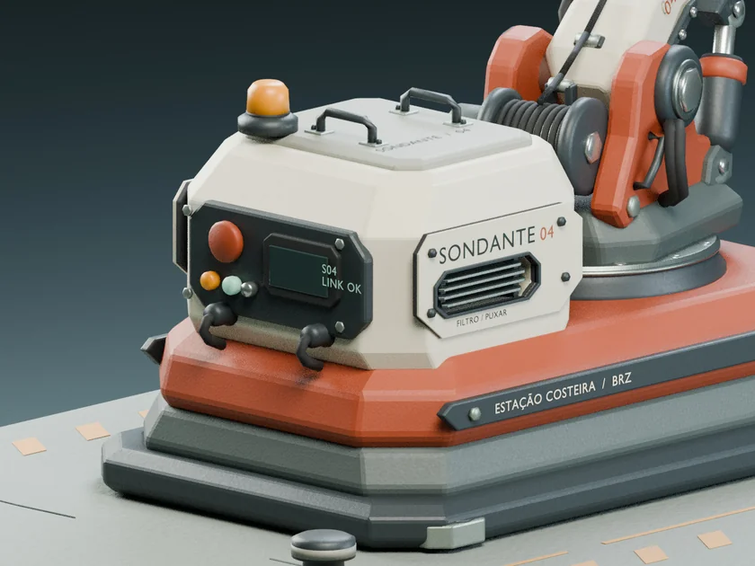
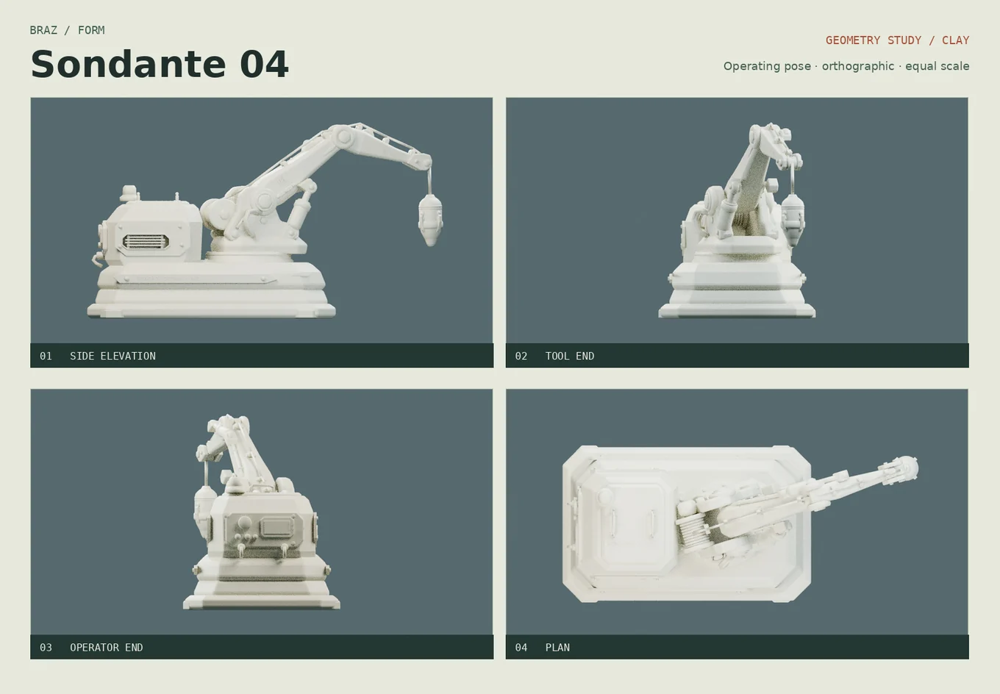

Selected work
Hard-surface modeling / Mechanical animation
Sondante 04
Coastal sampling station
A dockside machine that unfolds over the water, lowers a suspended probe and reels it back in.

Interactive model
Inspect the mechanism.
Settling
Ready to open the interactive model.
Motion study
The weight of the probe.
Construction
Three assemblies up close.

Arm and drive
Pinned links and sliding hydraulic rods.

Probe and line
A finned probe suspended from the winch.

Service housing
Recessed intake, service cover and operator panel.
Open the orthographic plate
